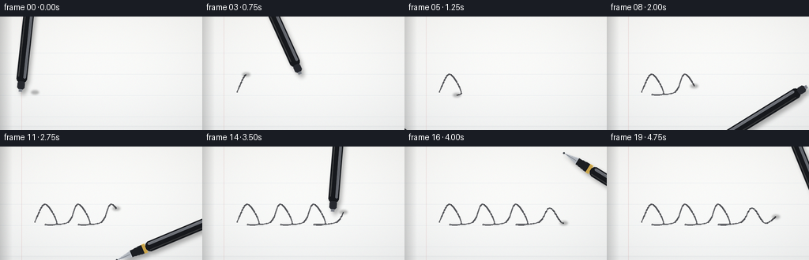
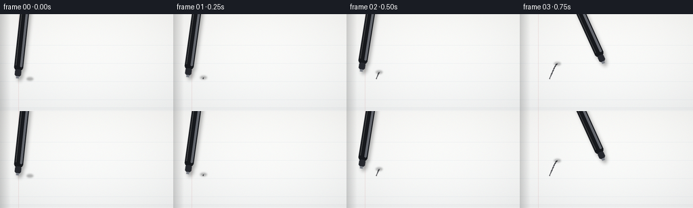
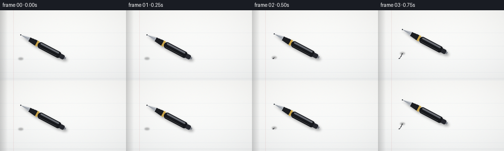
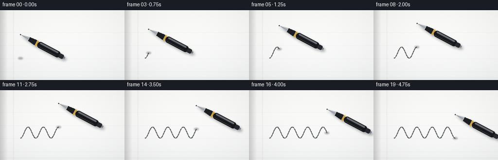

CODING AGENTS AS PIXEL WORLD MODELS
traex/Seed-2.1-Pro-0915 · phygen_035
点击播放 · 原生 RGB 像素
逐轮保存的候选
回放视频、检查图与代码变化。
每份候选均可单独播放。实际图片检查记录在下方工具轨迹中。
候选 01播放与检查图
点击播放 · 原生 RGB 像素


展开代码变化
--- 上一保存版本
+++ 本次保存版本
@@ -0,0 +1,234 @@
+"""Text-to-video: a black pen writing on a smooth white notebook page.
+
+Renders 20 RGB frames (256x144 @ 4fps) with numpy + PIL only. The scene is a
+top-down notebook view. A black ballpoint pen follows a cursive-like spline
+path and leaves an accumulating ink trail behind its nib.
+"""
+import math
+
+import numpy as np
+from PIL import Image, ImageDraw, ImageFilter
+
+import artifact_io
+
+W, H, N, FPS = 256, 144, 20, 4.0
+SS = 2 # supersampling factor
+SW, SH = W * SS, H * SS
+
+
+# ---------------------------------------------------------------------------
+# Path helpers
+# ---------------------------------------------------------------------------
+def catmull_rom(points, samples_per_seg=24):
+ """Sample a smooth Catmull-Rom spline through the given 2D points."""
+ pts = [points[0]] + list(points) + [points[-1]]
+ out = []
+ for i in range(len(pts) - 3):
+ p0, p1, p2, p3 = pts[i], pts[i + 1], pts[i + 2], pts[i + 3]
+ for j in range(samples_per_seg):
+ t = j / samples_per_seg
+ t2, t3 = t * t, t * t * t
+ x = 0.5 * ((2 * p1[0]) + (-p0[0] + p2[0]) * t
+ + (2 * p0[0] - 5 * p1[0] + 4 * p2[0] - p3[0]) * t2
+ + (-p0[0] + 3 * p1[0] - 3 * p2[0] + p3[0]) * t3)
+ y = 0.5 * ((2 * p1[1]) + (-p0[1] + p2[1]) * t
+ + (2 * p0[1] - 5 * p1[1] + 4 * p2[1] - p3[1]) * t2
+ + (-p0[1] + 3 * p1[1] - 3 * p2[1] + p3[1]) * t3)
+ out.append((x, y))
+ out.append(points[-1])
+ return out
+
+
+# Handwriting-like looping stroke across the page (final-scale coordinates).
+CONTROL = [
+ (44, 96), (57, 73), (72, 97), (57, 99),
+ (86, 96), (99, 73), (114, 97), (99, 99),
+ (128, 96), (141, 73), (156, 97), (141, 99),
+ (170, 96), (184, 78), (200, 97), (214, 89),
+]
+PATH = [(x * SS, y * SS) for x, y in catmull_rom(CONTROL, 20)]
+
+
+# ---------------------------------------------------------------------------
+# Notebook page
+# ---------------------------------------------------------------------------
+def build_page():
+ """Static paper background with faint ruling, binding shadow and texture."""
+ rng = np.random.default_rng(7)
+ # Vertical light gradient, slightly cooler toward the top.
+ grad = np.linspace(0, 6, SH, dtype=np.float32)[:, None]
+ base = np.empty((SH, SW, 3), dtype=np.float32)
+ base[..., 0] = 252 - grad
+ base[..., 1] = 252 - grad * 0.8
+ base[..., 2] = 250 - grad * 0.5
+ # Gentle vignette.
+ yy, xx = np.mgrid[0:SH, 0:SW].astype(np.float32)
+ r2 = ((xx - SW / 2) / (SW / 2)) ** 2 + ((yy - SH / 2) / (SH / 2)) ** 2
+ vignette = np.clip(r2 * 7.0, 0, 14)
+ base -= vignette[..., None]
+ # Fine paper grain.
+ base += rng.normal(0, 1.1, base.shape).astype(np.float32)
+ page = Image.fromarray(np.clip(base, 0, 255).astype(np.uint8), "RGB")
+ draw = ImageDraw.Draw(page, "RGBA")
+
+ # Faint horizontal ruled lines.
+ for y in range(46 * SS, SH, 27 * SS):
+ draw.line([(0, y), (SW, y)], fill=(150, 170, 195, 38), width=1)
+ # Faint margin rule near the left binding.
+ mx = 27 * SS
+ draw.line([(mx, 0), (mx, SH)], fill=(200, 140, 140, 45), width=SS)
+
+ # Binding shadow on the left edge (soft).
+ shadow_w = 16 * SS
+ band = np.linspace(1.0, 0.0, shadow_w, dtype=np.float32)[None, :, None]
+ arr = np.asarray(page).astype(np.float32)
+ arr[:, :shadow_w] *= (1 - 0.16 * band)
+ page = Image.fromarray(np.clip(arr, 0, 255).astype(np.uint8), "RGB")
+ draw = ImageDraw.Draw(page, "RGBA")
+ # Stacked page edges along the bottom.
+ for k, y in enumerate((SH - 5 * SS, SH - 3 * SS)):
+ draw.line([(0, y), (SW, y)], fill=(170, 178, 188, 70 - k * 20), width=1)
+ return page
+
+
+PAGE = build_page()
+
+
+# ---------------------------------------------------------------------------
+# Pen sprite (horizontal, nib on the left, barrel toward +x)
+# ---------------------------------------------------------------------------
+def build_pen():
+ length = 168 * SS
+ height = 15 * SS
+ pad = 10 * SS
+ img = Image.new("RGBA", (length + 2 * pad, height + 2 * pad), (0, 0, 0, 0))
+ d = ImageDraw.Draw(img)
+ cy = pad + height // 2
+ x0 = pad # nib tip anchor
+
+ # Metal nib cone.
+ nib_end = x0 + 20 * SS
+ d.polygon([(x0, cy), (nib_end, cy - 4.2 * SS), (nib_end, cy + 4.2 * SS)],
+ fill=(176, 181, 188, 255))
+ d.line([(x0 + 3 * SS, cy), (nib_end - 2 * SS, cy)],
+ fill=(110, 115, 122, 255), width=max(1, SS // 2))
+ # Tiny ballpoint bead.
+ d.ellipse([x0 - SS, cy - SS, x0 + SS, cy + SS], fill=(60, 64, 70, 255))
+
+ # Black front grip (tapered).
+ grip_end = nib_end + 16 * SS
+ d.polygon([(nib_end, cy - 4.2 * SS), (grip_end, cy - 6 * SS),
+ (grip_end, cy + 6 * SS), (nib_end, cy + 4.2 * SS)],
+ fill=(28, 30, 34, 255))
+
+ # Gold band.
+ band_end = grip_end + 4 * SS
+ d.rectangle([grip_end, cy - 6 * SS, band_end, cy + 6 * SS],
+ fill=(198, 162, 74, 255))
+ d.line([(grip_end, cy - 6 * SS), (band_end, cy - 6 * SS)],
+ fill=(235, 205, 120, 255), width=1)
+
+ # Main black barrel with rounded end.
+ barrel_end = x0 + length - 12 * SS
+ d.rounded_rectangle([band_end, cy - 6.5 * SS, barrel_end, cy + 6.5 * SS],
+ radius=6 * SS, fill=(22, 24, 28, 255))
+ # Barrel highlight stripe.
+ d.rounded_rectangle([band_end + 4 * SS, cy - 5 * SS,
+ barrel_end - 6 * SS, cy - 2 * SS],
+ radius=2 * SS, fill=(78, 82, 90, 200))
+ d.line([(band_end + 4 * SS, cy + 4 * SS),
+ (barrel_end - 8 * SS, cy + 4 * SS)],
+ fill=(10, 11, 13, 180), width=SS)
+
+ # End cap with clicker.
+ d.rounded_rectangle([barrel_end - 2 * SS, cy - 4.5 * SS,
+ barrel_end + 8 * SS, cy + 4.5 * SS],
+ radius=3 * SS, fill=(38, 40, 46, 255))
+ d.rectangle([barrel_end + 8 * SS, cy - 2 * SS,
+ barrel_end + 11 * SS, cy + 2 * SS],
+ fill=(120, 124, 132, 255))
+ return img, (x0, cy)
+
+
+PEN, PEN_PIVOT = build_pen()
+
+
+def rotated_pen(angle_deg, tip_xy):
+ """Return (pen image, paste position) with the nib at tip_xy."""
+ theta = math.radians(angle_deg)
+ rot = PEN.rotate(angle_deg, resample=Image.BICUBIC, expand=True)
+ px, py = PEN_PIVOT
+ cx, cy = PEN.width / 2, PEN.height / 2
+ # Pivot location within the expanded rotated image.
+ cos_a, sin_a = math.cos(theta), math.sin(theta)
+ dx, dy = px - cx, py - cy
+ rot_pivot_x = rot.width / 2 + dx * cos_a - dy * sin_a
+ rot_pivot_y = rot.height / 2 + dx * sin_a + dy * cos_a
+ pos = (int(round(tip_xy[0] - rot_pivot_x)),
+ int(round(tip_xy[1] - rot_pivot_y)))
+ return rot, pos
+
+
+def pen_shadow(rot_pen, pos, tip_xy):
+ """Soft offset silhouette shadow plus a contact blob at the nib."""
+ alpha = rot_pen.split()[3]
+ shadow = Image.new("RGBA", rot_pen.size, (0, 0, 0, 0))
+ shadow.putalpha(alpha.point(lambda a: int(a * 0.32)))
+ shadow = shadow.filter(ImageFilter.GaussianBlur(2.2 * SS))
+ layer = Image.new("RGBA", (SW, SH), (0, 0, 0, 0))
+ layer.alpha_composite(shadow, (pos[0] + 3 * SS, pos[1] + 4 * SS))
+ # Contact shadow right under the nib.
+ sd = ImageDraw.Draw(layer)
+ sd.ellipse([tip_xy[0] - 5 * SS, tip_xy[1] - 2.5 * SS,
+ tip_xy[0] + 5 * SS, tip_xy[1] + 2.5 * SS],
+ fill=(0, 0, 0, 70))
+ return layer.filter(ImageFilter.GaussianBlur(1.2 * SS))
+
+
+# ---------------------------------------------------------------------------
+# Frame rendering
+# ---------------------------------------------------------------------------
+def render_frame(index):
+ frame = PAGE.copy().convert("RGBA")
+
+ # Eased progress along the spline; the pen keeps moving through all frames.
+ t = index / (N - 1)
+ eased = 0.5 - 0.5 * math.cos(math.pi * t) # smoothstep in/out
+ head = min(len(PATH) - 1, int(round(eased * (len(PATH) - 1))))
+ tip = PATH[head]
+
+ # Ink trail accumulated behind the nib.
+ if head > 1:
+ trail = Image.new("RGBA", (SW, SH), (0, 0, 0, 0))
+ td = ImageDraw.Draw(trail)
+ width = max(2, int(1.6 * SS))
+ td.line(PATH[:head + 1], fill=(26, 27, 32, 235),
+ width=width, joint="curve")
+ # Slight ink sheen: thinner, marginally lighter core.
+ td.line(PATH[:head + 1], fill=(48, 50, 58, 120),
+ width=max(1, width - SS), joint="curve")
+ frame.alpha_composite(trail)
+
+ # Pen orientation: tangent of travel with a fixed hand-held tilt upward.
+ prev_pt = PATH[max(0, head - 2)]
+ next_pt = PATH[min(len(PATH) - 1, head + 2)]
+ tangent = math.degrees(math.atan2(next_pt[1] - prev_pt[1],
+ next_pt[0] - prev_pt[0]))
+ angle = tangent - 32.0 # barrel lifted toward the upper right
+ rot, pos = rotated_pen(angle, tip)
+
+ frame.alpha_composite(pen_shadow(rot, pos, tip))
+ frame.alpha_composite(rot, pos)
+
+ rgb = frame.convert("RGB").resize((W, H), Image.LANCZOS)
+ return np.asarray(rgb, dtype=np.uint8)
+
+
+def main():
+ frames = np.stack([render_frame(i) for i in range(N)], axis=0)
+ artifact_io.save(frames, ".")
+ print(f"Saved {N} frames at {W}x{H}, {FPS} fps")
+
+
+if __name__ == "__main__":
+ main()
候选 02播放与检查图
点击播放 · 原生 RGB 像素


展开代码变化
--- 上一保存版本
+++ 本次保存版本
@@ -16,37 +16,23 @@
SW, SH = W * SS, H * SS
-# ---------------------------------------------------------------------------
-# Path helpers
-# ---------------------------------------------------------------------------
-def catmull_rom(points, samples_per_seg=24):
- """Sample a smooth Catmull-Rom spline through the given 2D points."""
- pts = [points[0]] + list(points) + [points[-1]]
- out = []
- for i in range(len(pts) - 3):
- p0, p1, p2, p3 = pts[i], pts[i + 1], pts[i + 2], pts[i + 3]
- for j in range(samples_per_seg):
- t = j / samples_per_seg
- t2, t3 = t * t, t * t * t
- x = 0.5 * ((2 * p1[0]) + (-p0[0] + p2[0]) * t
- + (2 * p0[0] - 5 * p1[0] + 4 * p2[0] - p3[0]) * t2
- + (-p0[0] + 3 * p1[0] - 3 * p2[0] + p3[0]) * t3)
- y = 0.5 * ((2 * p1[1]) + (-p0[1] + p2[1]) * t
- + (2 * p0[1] - 5 * p1[1] + 4 * p2[1] - p3[1]) * t2
- + (-p0[1] + 3 * p1[1] - 3 * p2[1] + p3[1]) * t3)
- out.append((x, y))
- out.append(points[-1])
- return out
-
-
-# Handwriting-like looping stroke across the page (final-scale coordinates).
-CONTROL = [
- (44, 96), (57, 73), (72, 97), (57, 99),
- (86, 96), (99, 73), (114, 97), (99, 99),
- (128, 96), (141, 73), (156, 97), (141, 99),
- (170, 96), (184, 78), (200, 97), (214, 89),
-]
-PATH = [(x * SS, y * SS) for x, y in catmull_rom(CONTROL, 20)]
+# Handwriting-like cursive humps. X is monotonic so the pen tangent never
+# reverses; the stroke reads as connected cursive letters on a ruled line.
+def handwriting_path():
+ n_humps, samples = 4, 200
+ x_start, x_end = 42.0, 168.0
+ baseline, amplitude = 99.0, 23.0
+ pts = []
+ for i in range(samples):
+ u = i / (samples - 1)
+ x = x_start + u * (x_end - x_start)
+ phase = 2 * math.pi * n_humps * u
+ y = baseline - amplitude * (1 - math.cos(phase)) * 0.5
+ pts.append((x * SS, y * SS))
+ return pts
+
+
+PATH = handwriting_path()
# ---------------------------------------------------------------------------
@@ -98,8 +84,8 @@
# Pen sprite (horizontal, nib on the left, barrel toward +x)
# ---------------------------------------------------------------------------
def build_pen():
- length = 168 * SS
- height = 15 * SS
+ length = 104 * SS
+ height = 13 * SS
pad = 10 * SS
img = Image.new("RGBA", (length + 2 * pad, height + 2 * pad), (0, 0, 0, 0))
d = ImageDraw.Draw(img)
@@ -209,12 +195,8 @@
width=max(1, width - SS), joint="curve")
frame.alpha_composite(trail)
- # Pen orientation: tangent of travel with a fixed hand-held tilt upward.
- prev_pt = PATH[max(0, head - 2)]
- next_pt = PATH[min(len(PATH) - 1, head + 2)]
- tangent = math.degrees(math.atan2(next_pt[1] - prev_pt[1],
- next_pt[0] - prev_pt[0]))
- angle = tangent - 32.0 # barrel lifted toward the upper right
+ # A held pen keeps a roughly constant tilt while the nib follows the path.
+ angle = -28.0
rot, pos = rotated_pen(angle, tip)
frame.alpha_composite(pen_shadow(rot, pos, tip))
可观测工具轨迹
实际执行的命令与返回图片。
命令 1exit 0
/bin/bash -lc 'ls -la && cat prompt.txt GENERATION_RULES.md task_spec.json'
命令 2exit 0
/bin/bash -lc 'cat artifact_io.py && cat player_template.html'
命令 3exit 0
/bin/bash -lc 'cd . && python generate.py && ls -la'
命令 4exit 0
/bin/bash -lc 'cd . && python generate.py'
视觉工具实际返回图片 1

视觉工具实际返回图片 2

保存候选 2 份；完成命令 4 次；可验证图片返回 2 张。原始 API 响应与完整日志保留在本地。